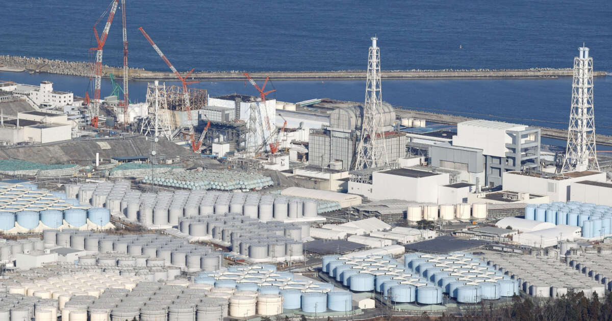
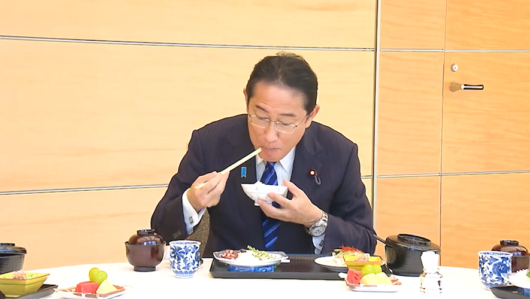

Environnement
Chaque jour, depuis le 22 aout dernier, le Japon déverse 100 000 litres d’eau contaminée au tritium dans les eaux d’Asie de l’Est. Cette décision du gouvernement suscite une polémique auprès de l’opinion publique, qui semble en grande majorité défavorable.
La récente décision prise par Fumio Kishida déclenche de vives réactions, notamment au niveau international. Son choix de vider dans l’océan les cuves remplies par l’eau contaminée issue du refroidissement des réacteurs nucléaires de la centrale de Fukushima, endommagés par un tsunami en 2011 est très contesté. De nombreux rassemblements de militants écologistes sont organisés. Parmi eux, Park Jong-Kwon, se dit sidéré par cette décision. En effet, les scientifiques estiment à 12 ans le temps pour que le tritium ne soit plus radioactif. Ils alertent également sur les risques de ce composé qui peut se fixer sur les algues et les poissons de la zone, ce qui pourrait présenter un risque en termes de santé publique. Pourtant, l’opération a été validée par l’AIEA (agence internationale de l’énergie atomique) qui explique travailler sur ce projet avec de nombreux scientifiques depuis plusieurs années et qui déclare cette action tout à fait sans danger.
Pour essayer de rassurer pécheurs et consommateurs, le 1er ministre japonais, Fumio Kishida s’est mis en scène, le 30 aout 2023, sur les réseaux sociaux, entrain de consommer du poisson péché près de la centrale nucléaire de Fukushima. Il confesse même devant la caméra « C’est très bon » . Cette vidéo a pour objectif d’encourager les Japonais à se nourrir avec le poisson péché dans les eaux japonaises. Par la même occasion, le gouvernement espère réduire la méfiance les pays importateurs des fruits de mer japonais.
La Chine réagit cependant de façon hostile, elle suspend provisoirement ses importations de fruits de mer en provenance du japon cette décision a provoqué de nombreuses réactions jugées disproportionnées par le gouvernement japonais. A Pékin, l’ambassade japonaise a reçu des œufs et des briques ainsi que des écoles nippones. De nombreuses entreprises japonaises ont été également harcelées par téléphone par des numéros chinois à la suite du déclenchement de ce programme. Le japon menace de porter plainte auprès de l’OMC (organisation mondiale du commerce) en réaction aux mesures drastiques prises par la Chine.